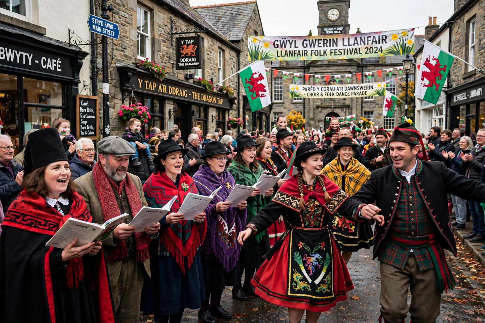

| Llangollen International Musical Eisteddfod | |
|---|---|
| Genre | Music and dance festival (eisteddfod) |
| Dates | Annually in July (six days) |
| Location | Llangollen, Denbighshire, Wales |
| First held | 1947 |
| Founder | Harold Tudor |
| Attendance | Around 50,000 visitors; ~4,000 performers from up to 50 countries |

The Llangollen International Musical Eisteddfod is a music festival which takes place every year during the second week of July in Llangollen, North Wales. It is one of several large annual eisteddfodau in Wales. Singers and dancers from around the world are invited to take part in over 20 competitions followed each evening by concerts on the main stage, culminating in the Choir of the World competition for the Pavarotti Trophy.
The festival was founded by Harold Tudor, a local journalist, as a post-war gesture of international reconciliation: the first eisteddfod in 1947 welcomed choirs from across a Europe recently torn by war, including a German choir whose participation was a notable act of bridge-building. Performers are traditionally hosted in the homes of local residents, a practice that continues.
In 1955 a young Luciano Pavarotti competed with his father's choir, the Corale Gioachino Rossini of Modena, and won first prize; he returned in 1995 to give a celebrated concert, and the Choir of the World trophy was renamed the Pavarotti Trophy in his memory. The festival's peace message is a central feature: each year a message of peace and goodwill is delivered, continuing a Welsh eisteddfod tradition dating to 1922. In 2004 the festival was nominated for the Nobel Peace Prize through the work of peace campaigner Terry Waite in promoting it.